데이터베이스 완전 정리
SQL · NoSQL · 그리고 그 너머
1970년 관계형 모델의 탄생부터 웹 스케일이 만든 NoSQL 혁명, AI 시대의 벡터 DB, 그리고 파일이 사는 곳(S3·CDN)과 이 모든 것을 하나로 묶은 Supabase까지 — 왜 이렇게 다양해졌는지, 무엇을 언제 써야 하는지를 한 문서로 정리한다.
0. 한눈에 보기 — DB 세계의 지형도
데이터베이스 55년사는 "무결성 → 확장성 → 적재적소"라는 세 시대로 요약된다
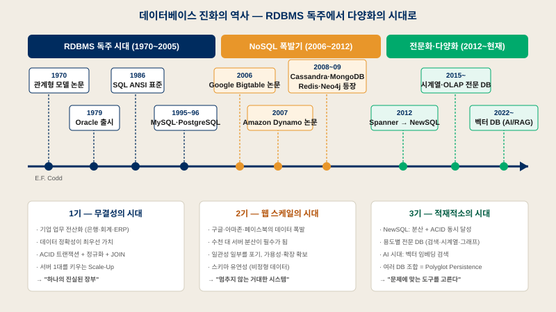
(E.F. Codd 논문)
= NoSQL 빅뱅
KV·문서·컬럼·그래프
(DB-Engines 등재 기준)
1. RDBMS — 관계형 데이터베이스의 시대
40년간 사실상 유일한 표준이었던, 그리고 여전히 기본값인 기술
A관계형 이전 — 파일의 혼란, 그리고 두 번의 실패한 시도
데이터베이스가 없던 시절(1950~60년대), 데이터 저장의 유일한 수단은 파일이었다. 팀마다 엑셀·텍스트 파일을 하나씩 만들어 관리했고, 수백 건 규모에서는 그럭저럭 굴러갔다. 하지만 데이터가 쌓이면서 중복 · 불일치 · 검색 비효율 · 동시 수정 충돌이라는 4대 문제가 폭발했다 — "데이터는 쌓이는데 관리가 안 된다."
그래서 저장 방식 자체를 새로 설계하려는 시도가 시작됐다. IBM이 주도한 계층형 DB(조직도 같은 트리 구조)는 위아래로만 움직일 수 있어 "이 직원이 참여한 모든 프로젝트는?" 같은 질문에 답하지 못했고, 이를 개선한 네트워크형 DB(그물 구조)는 유연해진 대신 데이터를 꺼내는 경로를 프로그래머가 일일이 코드로 정의해야 했다. 연결하려는 시도는 시작됐지만, 해답은 아니었다.
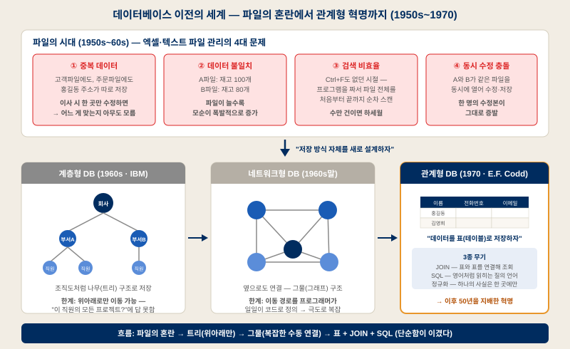
1970년 IBM의 수학자 에드거 커드(E.F. Codd)가 논문 「대규모 공유 데이터 뱅크를 위한 관계형 데이터 모델」로 판을 뒤집는다. 핵심 아이디어는 놀랄 만큼 단순했다 — "데이터를 표(테이블)로 저장하자." 중복을 제거하는 정규화로 여러 테이블에 나누고, 영어처럼 읽히는 SQL로 질의하며, 표와 표는 JOIN으로 연결한다. 처음엔 "이론은 좋은데 실제로 빠를까?"라는 의심을 받았지만, 하드웨어 성능이 따라와 주면서 이후 50년을 지배하는 표준이 되었다.
BACID — 트랜잭션의 4대 보증
| 속성 | 의미 | 예시 — 계좌이체 10만원 |
|---|---|---|
| Atomicity 원자성 | 전부 성공하거나 전부 실패. 중간 상태는 없다 | 출금만 되고 입금이 안 되는 상황은 발생 불가 — 실패 시 전체 롤백 |
| Consistency 일관성 | 트랜잭션 전후로 무결성 규칙이 항상 유지 | "잔액 ≥ 0" 제약을 위반하는 트랜잭션은 커밋 거부 |
| Isolation 고립성 | 동시 실행되는 트랜잭션이 서로 간섭하지 않음 | 내 이체가 진행되는 동안 다른 조회는 중간값을 보지 못함 |
| Durability 지속성 | 커밋된 데이터는 장애에도 살아남음 | 커밋 직후 정전이 나도 재기동 시 이체 기록 유지 (WAL 로그) |
C대표 제품 계보
| 제품 | 포지션 | 특징 |
|---|---|---|
| Oracle | 엔터프라이즈 | 금융권·대기업 표준. 기능·안정성 최강, 라이선스 비용도 최강 |
| MySQL / MariaDB | 웹 서비스 | 웹 시대의 표준. Oracle의 MySQL 인수 후 원 개발자가 MariaDB로 포크 |
| PostgreSQL | 떠오르는 왕 | JSONB·GIS·전문검색·pgvector 등 확장 생태계 강력 — "웬만하면 Postgres"라는 말의 주인공 |
| SQL Server | MS 진영 | .NET·Windows 환경과 최적 궁합, BI 도구 연동 우수 |
| SQLite | 임베디드 | 서버 없이 파일 하나로 동작. 모바일·브라우저 등 지구상 최다 배포 DB |
✓ RDBMS의 강점
- 데이터 무결성 — 스키마 + 제약조건 + ACID
- 복잡한 JOIN·집계·서브쿼리 자유자재
- SQL = 40년 검증된 표준, 인력·도구 풍부
- 트랜잭션이 필요한 모든 업무의 기본값
✗ RDBMS의 한계
- 수평 확장(scale-out)이 어렵다 — 분산 JOIN·분산 트랜잭션의 비용
- 스키마 변경이 무겁다 (ALTER TABLE의 공포)
- 초대량 쓰기 트래픽에서 병목
- 비정형 데이터(로그·SNS·센서)와 안 맞음
심화 — 정규화란 정확히 무엇인가
정규화는 "하나의 사실은 한 곳에만 저장한다"는 원칙이다. 고객 주소가 주문 테이블에 100번 복사돼 있으면, 이사할 때 100곳을 고쳐야 하고 한 곳이라도 놓치면 데이터가 모순된다(갱신 이상).
그래서 고객 정보는 customers에 한 번만 두고, 주문은 customer_id로 참조한다.
대가는 조회 시 JOIN 비용이다. NoSQL(특히 문서 DB)은 정반대로 비정규화(중복 허용)를 기본 전략으로 삼아 조회를 빠르게 하는 대신, 갱신 시 여러 곳을 손봐야 하는 부담을 응용 프로그램이 진다. — 정규화 vs 비정규화는 "쓰기 편의 vs 읽기 성능"의 트레이드오프다.
2. NoSQL은 왜 등장했나
2000년대 구글·아마존이 부딪힌 벽 — 그리고 CAP 정리라는 물리 법칙
2000년대 중반, 구글·아마존·페이스북의 데이터가 한 대의 서버로는 감당 불가능한 규모가 되었다. 해법은 수천 대의 값싼 서버에 데이터를 나눠 담는 것(scale-out)인데, 문제는 RDBMS의 JOIN과 ACID가 여러 서버에 걸쳐서는 극도로 느리고 어렵다는 점이었다.
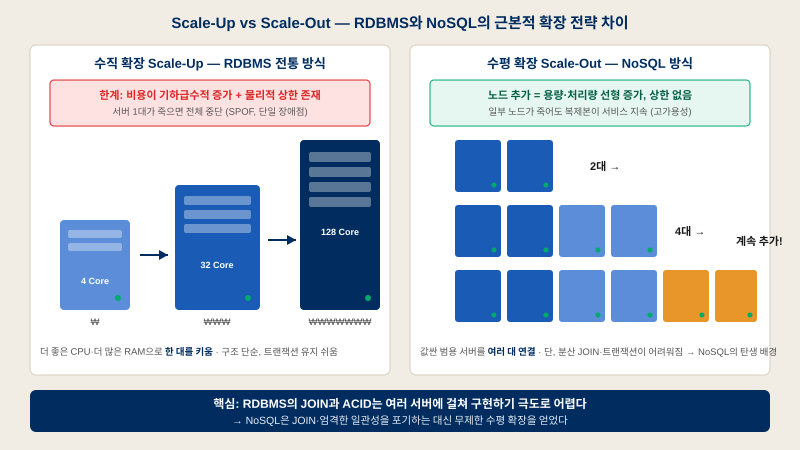
DCAP 정리 — 분산 시스템의 물리 법칙
2000년 에릭 브루어(Eric Brewer)가 제시한 정리: 분산 시스템은 일관성(C)·가용성(A)·분단내성(P) 중 둘만 온전히 가질 수 있다. 네트워크 장애(P)는 현실에서 피할 수 없으므로, 실질적 선택은 CP vs AP다.
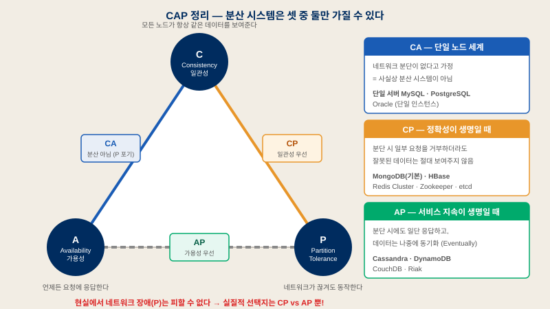
EACID vs BASE — 철학의 대립
| ACID (RDBMS 진영) | BASE (NoSQL 진영) | |
|---|---|---|
| 풀네임 | Atomicity · Consistency · Isolation · Durability | Basically Available · Soft state · Eventually consistent |
| 일관성 | 강한 일관성 — 커밋 즉시 모두가 같은 값을 봄 | 최종적 일관성 — 잠시 노드마다 다를 수 있으나 결국 일치 |
| 우선 가치 | 정확성 — "틀린 데이터를 보여주느니 멈춘다" | 가용성 — "일단 응답하고 나중에 맞춘다" |
| 어울리는 데이터 | 돈 · 재고 · 예약 · 계약 | 좋아요 수 · 조회수 · 로그 · 타임라인 |
| 비유 | 은행 장부 | SNS 피드 |
3. NoSQL 4대 유형 — 저장 구조가 곧 정체성
Key-Value · Document · Column-Family · Graph — 무엇을 최적화했는지가 다르다
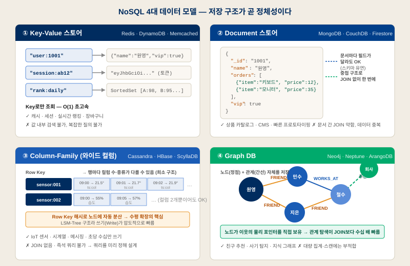
3-1. Key-Value — Redis
거대한 해시맵(딕셔너리)이다. Key로만 조회하는 대신 O(1)에 가까운 속도를 얻는다. Redis는 여기에 인메모리(RAM)라는 무기를 더해 마이크로초~밀리초 응답을 실현한다 — 디스크 DB 대비 100~1,000배.
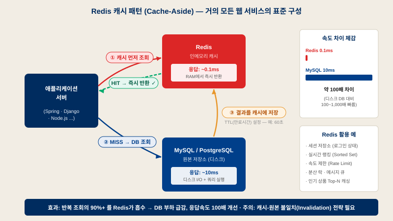
🗂 단순 캐시만이 아니다
String 외에 List·Set·Sorted Set(실시간 랭킹)·Hash·Stream(경량 메시지 큐) 등 자료구조를 서버 차원에서 제공한다. "자료구조 서버"라 불리는 이유.
⏱ TTL — 스스로 사라지는 데이터
키마다 만료 시간을 설정 가능. 세션(30분), 인증코드(3분), 캐시(60초)처럼 수명이 있는 데이터에 이상적이다.
⚠️ 약점
메모리 크기 = 비용. 복잡한 질의·검색 불가. 기본은 휘발성이므로 원본 저장소로 쓰려면 AOF/RDB 영속화 설정 필요.
3-2. Document — MongoDB
JSON(내부적으로 BSON) 문서 단위로 저장한다. RDBMS라면 여러 테이블 + JOIN이 필요한 데이터를 문서 하나에 중첩해 담고, 문서마다 구조가 달라도 된다. 조회가 직관적이고 스키마 진화가 자유롭다.
-- RDBMS: 2개 테이블 + JOIN SELECT u.name, o.item, o.price FROM users u JOIN orders o ON u.id = o.user_id WHERE u.id = 1001; // MongoDB: 문서 하나로 끝 — JOIN 없음 db.users.findOne({ _id: 1001 }) // → { name: "원영", orders: [ {item:"키보드", price:120000}, // {item:"모니터", price:350000} ], vip: true }
✓ 어울리는 곳
- 상품 카탈로그 — 상품마다 속성이 제각각
- CMS·게시판 등 콘텐츠 저장
- 스키마가 계속 바뀌는 초기 스타트업/프로토타입
- 객체(JSON) 그대로 저장하고 싶은 API 백엔드
✗ 주의할 점
- 비정규화(중복)가 기본 → 갱신 시 여러 문서 수정 부담
- 문서 간 JOIN($lookup)은 약하고 느림
- "스키마가 없다" ≠ "설계가 필요 없다" — 오히려 접근 패턴 기반 설계가 중요
- 다중 문서 트랜잭션은 4.0+부터 지원되나 RDBMS보다 비쌈
3-3. Column-Family — Cassandra
Bigtable(컬럼 모델) + Dynamo(분산 링)의 자식. 마스터가 없는 P2P 링 구조로 모든 노드가 동등하며, 노드를 추가하면 용량·처리량이 선형으로 증가한다. LSM-Tree 저장 구조 덕에 쓰기 성능이 압도적이다.
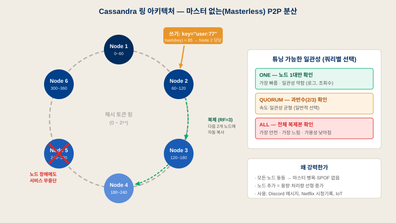
💬 Discord
수조(trillions) 건의 채팅 메시지를 Cassandra → ScyllaDB로 저장. 채널ID+시간 기반 파티셔닝.
🎬 Netflix
시청 기록·북마크를 글로벌 멀티 리전 Cassandra에 저장 — 어느 리전이 죽어도 시청은 계속된다.
📡 IoT / 시계열
초당 수십만 건 센서 데이터 수집. 쓰기 폭주 + 무중단이 요구 조건일 때 최우선 후보.
3-4. Graph — Neo4j
노드(정점)와 관계(간선) 자체를 일급 데이터로 저장한다. 각 노드가 이웃의 물리적 포인터를 직접 들고 있어 (Index-Free Adjacency), 관계를 따라가는 비용이 전체 데이터 크기와 무관하다 — RDBMS의 자기 JOIN과 결정적으로 다른 점.
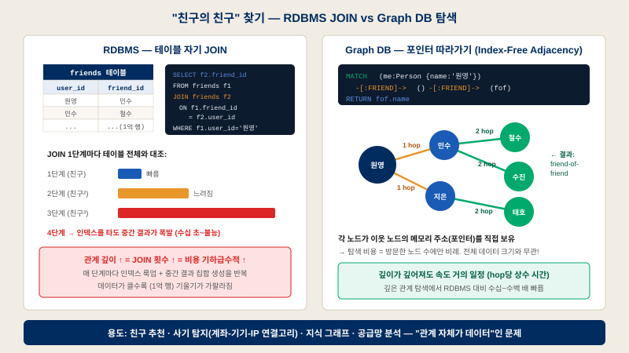
// 친구 추천: 원영의 친구의 친구 중, 아직 원영과 친구가 아닌 사람 MATCH (me:Person {name:'원영'})-[:FRIEND]->()-[:FRIEND]->(fof) WHERE NOT (me)-[:FRIEND]->(fof) AND me <> fof RETURN fof.name, count(*) AS mutualFriends ORDER BY mutualFriends DESC
🚨 사기 탐지 (FDS)
서로 다른 계좌들이 같은 기기·IP·전화번호로 연결된 고리를 실시간 탐지 — 은행·핀테크의 핵심 활용처.
🤝 추천 엔진
"이 상품을 산 사람들이 함께 산 상품" — 구매 그래프를 2~3 hop 탐색하는 문제.
🧠 지식 그래프
개체 간 관계망(인물-사건-장소). 최근엔 LLM + GraphRAG의 기반 저장소로 재조명.
4. NewSQL과 전문화의 시대
"ACID도, scale-out도 포기 못 해" — 그리고 용도별 전문 DB의 폭발
FNewSQL — 분산 환경에서 ACID 되살리기
NoSQL이 포기했던 트랜잭션을 분산 아키텍처 위에서 복원한 세대. 구글이 원자시계 + GPS로 전 지구적 트랜잭션 순서를 보장한 Spanner(2012)가 출발점이며, CockroachDB · TiDB · YugabyteDB가 그 오픈소스 후예다. 대부분 PostgreSQL/MySQL 호환 인터페이스를 제공해 이전 장벽을 낮췄다.
GOLTP vs OLAP — 행 저장과 열 저장
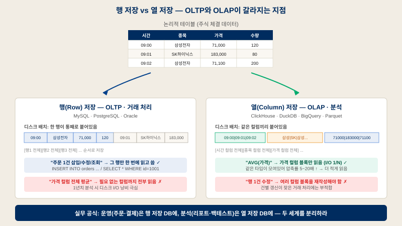
H특수 목적 DB 전성시대
| 유형 | 대표 제품 | 무엇에 최적화됐나 | 대표 용도 |
|---|---|---|---|
| 검색 엔진 | Elasticsearch, OpenSearch | 역색인(Inverted Index) 기반 전문 검색 | 상품 검색, 자동완성, 로그 분석(ELK) |
| 시계열 DB | InfluxDB, TimescaleDB, Prometheus | 시간축 압축·다운샘플링·보존정책 내장 | 서버 메트릭, IoT 센서, 주가·분봉 데이터 |
| 벡터 DB | Pinecone, Milvus, Qdrant, pgvector | 고차원 임베딩의 근사 최근접(ANN) 검색 | RAG, 유사 이미지·문서 검색, 추천 |
| 분석 컬럼 DB | ClickHouse, BigQuery, Snowflake | 열 저장 + 벡터화 실행 = 초고속 집계 | 대시보드, 수십억 행 애드혹 분석 |
| 임베디드 분석 | DuckDB | "분석계의 SQLite" — 설치 없는 로컬 OLAP | Parquet/CSV 직접 쿼리, Pandas 대체, 백테스트 |
| 메시지 로그 | Kafka | 추가 전용(append-only) 분산 로그 | 이벤트 스트리밍, DB 간 동기화(CDC) |
5. Polyglot Persistence — 조합의 기술
"만능 DB는 없다" — 현대 대규모 서비스의 표준 설계 철학
하나의 DB로 모든 문제를 풀려던 시대는 끝났다. 현대의 대규모 서비스는 데이터의 성격별로 최적의 저장소를 조합한다. 아래는 전형적인 이커머스의 실제 구성이다.
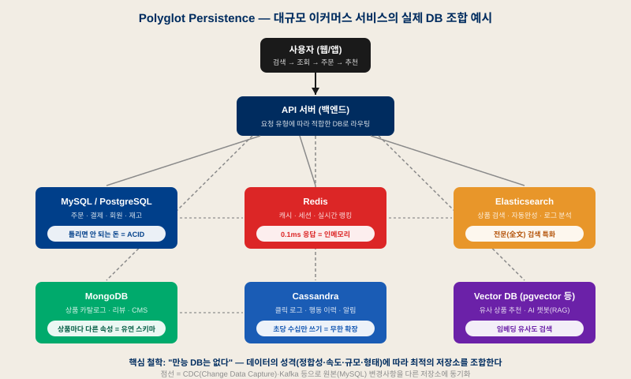
6. 스토리지 — 파일은 어디에 사는가
DB와는 완전히 다른 세계 — 이미지·영상·문서가 저장되고 전달되는 방식
지금까지는 구조화된 데이터(텍스트·숫자·관계)의 이야기였다. 그런데 서비스에는 또 다른 종류의 데이터가 있다 — 이미지·영상·문서 같은 바이너리 파일이다. 웹 초창기의 데이터는 몇 KB짜리 텍스트가 전부였지만, 사진(수 MB)과 영상(수백 MB)이 들어오고, 결정적으로 파일을 만드는 주체가 개발자가 아니라 사용자가 되면서 (게시판 첨부, 프로필 사진, SNS에 매일 올라오는 수억 장의 사진) 파일 저장은 서비스 전체의 문제가 되었다.
I서버 직접 저장의 한계 → 객체 스토리지(S3)의 발명
초창기에는 웹 서버 안에 /uploads 폴더를 만들어 파일을 넣고, DB에는 그 경로를 저장했다
(워드프레스는 지금도 이 구조를 쓴다). 소규모에선 통하지만, 서버가 죽으면 파일도 함께 사라지고, 서버를 늘리는 순간
"어느 서버에 어느 파일이 있나" 지옥이 열리며, 트래픽이 몰리면 파일 전송이 서버 본업을 마비시킨다.
2006년 Amazon S3가 이 문제를 정면으로 해결했다 — "파일 저장을 서버에서 떼어내라."
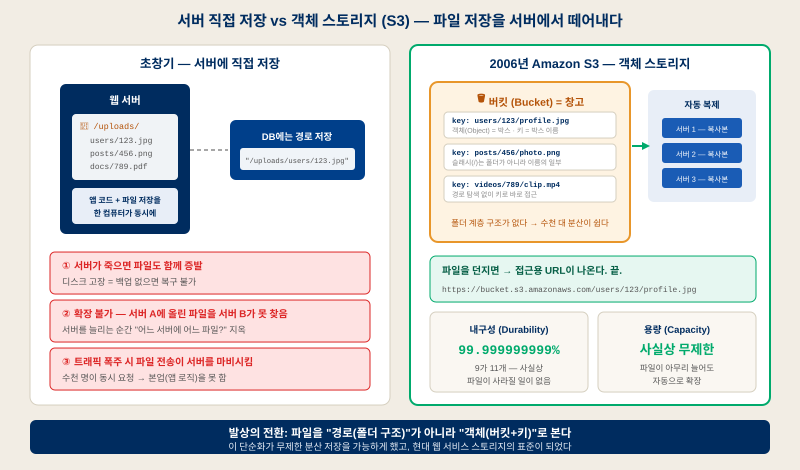
| 객체 스토리지 개념 | 비유 | 설명 |
|---|---|---|
| 버킷 (Bucket) | 창고 | 파일들을 담는 큰 저장 공간. 프로젝트/서비스당 하나씩 만드는 게 보통 |
| 객체 (Object) | 박스 | 저장되는 파일 하나하나 — 사진 한 장, 영상 하나, 문서 하나 |
| 키 (Key) | 박스 이름 | users/123/profile.jpg — 폴더처럼 보이지만 슬래시(/)는 그냥 이름의 일부. 폴더 계층이 없어서 경로 탐색 없이 키로 바로 접근하고, 수천 대 서버에 분산하기 쉽다 |
JCDN과 접근 권한 — 저장과 전달은 다른 문제
S3에 저장했다고 끝이 아니다. 원본 서버가 미국에 있으면 한국 사용자의 요청은 태평양을 왕복해야 한다. CDN(Content Delivery Network)은 같은 파일을 전 세계 엣지 서버(서울·도쿄·런던…)에 미리 복사(캐싱)해 두고, 사용자에게 가장 가까운 곳에서 전달해 지연 시간(Latency)을 극적으로 줄인다. 그리고 모든 파일이 공개여선 안 되므로, 접근 권한이 함께 설계된다.
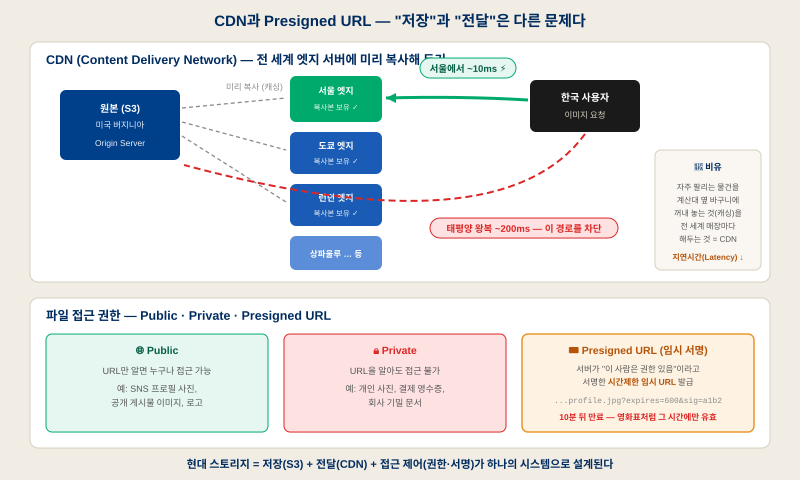
K실전 — 사진 한 장의 전체 여정
인스타그램에 사진을 올리는 순간부터 다른 사용자 화면에 뜨기까지, DB와 스토리지가 어떻게 역할을 나누는지 따라가 보자.
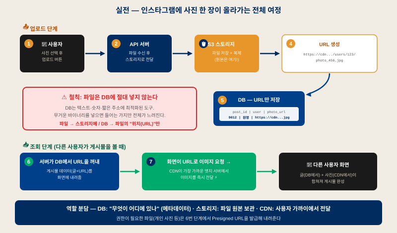
7. 클라우드 DB & BaaS — Supabase의 시대
"DB는 설치하는 게 아니라 전기처럼 꽂아 쓰는 것" — 그리고 DB·스토리지·인증의 통합
L관리형 DB와 서버리스 — 설치의 종말
2010년대 이전까지 DB는 전부 직접 설치하는 것이었다. 서버를 사거나 빌리고, MySQL을 설치·설정하고, 업데이트·백업·용량 증설을 직접 했다 — 이것이 DBA(데이터베이스 관리자)라는 전문 직군의 일이었다. 클라우드가 이걸 대신하겠다고 나선 것이 관리형 DB다.
☁️ AWS RDS
MySQL·PostgreSQL을 AWS가 미리 만들어 놓은 상태로 제공. 백업·업데이트·용량 관리를 전부 AWS가 알아서 한다. "설치"가 "생성 버튼 클릭"이 됐다.
🔥 Google Firebase
한 발 더 나아가 설정 거의 없이 앱에서 DB를 바로 연결. 서버 코드를 거의 안 짜도 앱이 만들어졌다 — 2010년대 중반 프런트엔드 개발자들의 표준 선택지.
⚡ 서버리스의 진짜 의미
서버가 없다는 뜻이 아니다 — 서버는 있는데 개발자가 신경 쓰지 않아도 된다는 뜻. 발전기를 직접 돌리지 않고 콘센트에 꽂아 쓰는 전기처럼, DB가 인프라에서 유틸리티가 됐다.
MFirebase의 한계, 그리고 Supabase
2010년대 후반, React 보편화로 프런트엔드 개발자가 폭증했다. 이들이 서비스를 만들려면 결국 DB·인증·API가 필요한데, 로그인 하나 제대로 만드는 데만 상당한 절차(JWT 등)가 든다. 스타트업도 마찬가지 — "DB보다 제품 개발 속도가 더 중요해졌다." Firebase가 이 요구를 먼저 잡았지만 약점이 있었다: DB가 NoSQL 기반이라 복잡한 관계·정교한 쿼리가 어렵고, 구글 독점 서비스라 정책 변경에 종속된다. 그래서 2020년 Supabase가 등장한다 — "Firebase처럼 편하게, 그런데 제대로 된 SQL(PostgreSQL)로."
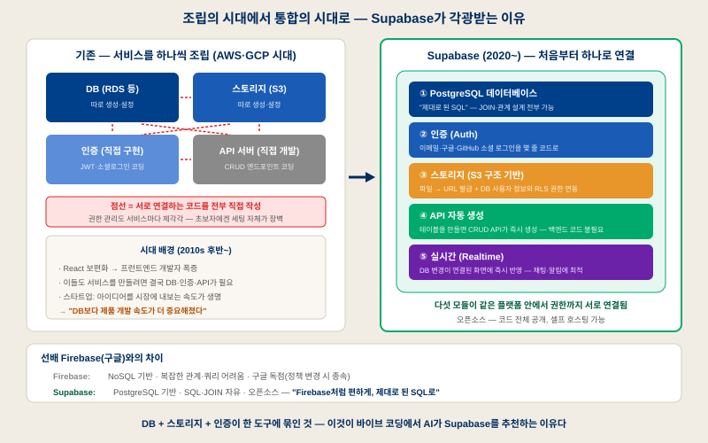
| Firebase (Google) | Supabase (2020~) | |
|---|---|---|
| 데이터베이스 | NoSQL (문서 기반) | PostgreSQL — 표 · JOIN · 관계 설계 자유 |
| 쿼리 | 제한적 — 복잡한 조건 조회가 어려움 | SQL 전부 사용 가능 — 어떤 쿼리도 OK |
| 소유 구조 | 구글 독점 — 정책 바뀌면 따라가야 함 | 오픈소스 — 코드 공개, 셀프 호스팅 가능 |
| 스토리지 | Cloud Storage 연동 | S3 구조 기반 + RLS로 DB 사용자와 권한 연동 |
| 한 줄 요약 | 서버 없는 앱 개발의 개척자 | 개척자의 편리함 + 제대로 된 SQL |
① PostgreSQL DB
§1에서 "떠오르는 왕"이라 했던 그 DB 그대로. SQL·JOIN·관계 설계 전부 가능.
② 인증 (Auth)
이메일·구글·GitHub 소셜 로그인을 몇 줄 코드로. 직접 만들면 며칠 걸릴 기능을 그냥 준다.
③ 스토리지
파일 업로드 → URL 발급. RLS 연동: "이 파일은 이 사용자만"을 DB 기준으로 자동 관리.
④ API 자동 생성
테이블을 만들면 CRUD API가 즉시 생성 — 백엔드 코드를 직접 짤 필요가 없다.
⑤ 실시간 (Realtime)
DB 변경이 연결된 화면에 즉시 반영. 채팅·알림·협업 기능을 아주 쉽게 구현.
💡 그래서 AI가 추천한다
바이브 코딩에서 AI가 늘 Supabase를 권하는 이유 = DB+인증+스토리지가 처음부터 연결된 통합 스택이기 때문.
8. 종합 비교 & 선택 가이드
한 장의 표, 그리고 상황을 고르면 답이 나오는 선택 도우미
N5대 DB 최종 비교표
| RDBMS PostgreSQL·MySQL | Redis | MongoDB | Cassandra | Neo4j | |
|---|---|---|---|---|---|
| 데이터 모델 | 테이블 (행×열) | Key-Value + 자료구조 | JSON 문서 | 와이드 컬럼 | 그래프 (노드·간선) |
| 스키마 | 엄격 | 없음 | 유연 | 반고정 | 유연 |
| 트랜잭션 | 완전 ACID | 제한적 (MULTI/Lua) | 문서 단위 (4.0+ 멀티문서) | 경량 (LWT) | ACID |
| 확장 방식 | 주로 수직 ↑ (+읽기 복제) | 클러스터 | 샤딩 (자동) | 수평 → 최강 | 주로 수직 ↑ |
| JOIN / 관계 | 강력 | 없음 | 약함 ($lookup) | 없음 | 본질 그 자체 |
| CAP 포지션 | CA (단일 노드) | CP (Cluster) | CP (기본) | AP (튜닝 가능) | CA/CP |
| 최대 강점 | 무결성 · 범용성 | 속도 (인메모리) | 개발 생산성 | 쓰기량 · 가용성 | 관계 탐색 |
| 대표 사용처 | 결제 · 재고 · ERP | 캐시 · 세션 · 랭킹 | 카탈로그 · CMS | IoT · 메시징 · 로그 | 추천 · 사기 탐지 |
🧭 DB 선택 도우미
지금 다루려는 데이터와 가장 가까운 상황을 클릭해 보세요.
O기억할 세 가지 실무 결론
1. 기본값은 PostgreSQL
고민된다면 Postgres로 시작하라. JSONB·pgvector·전문검색까지 품은 현재의 Postgres는 중소 규모의 거의 모든 요구를 혼자 감당한다. 전문 DB는 병목이 측정으로 증명된 후에 추가해도 늦지 않다. (Supabase를 쓴다면 이미 Postgres 위에 서 있는 것이다.)
2. 데이터의 성격이 DB를 고른다
"요즘 뜨는 DB"가 아니라 일관성·가용성·규모·형태라는 데이터의 요구사항이 기준이다. 돈이면 ACID, 캐시면 인메모리, 쓰기 폭주면 링 구조, 관계 탐색이면 그래프 — 문제가 도구를 결정한다.
3. 파일은 DB 밖에 산다
이미지·영상·문서는 객체 스토리지(S3)에 저장하고 DB에는 URL만 넣는다. 전달 속도는 CDN이, 접근 제어는 Public/Private/Presigned URL이 담당한다 — 저장·전달·권한은 한 세트다.